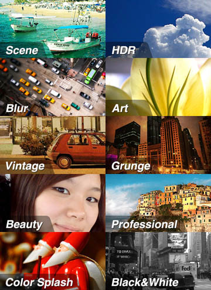
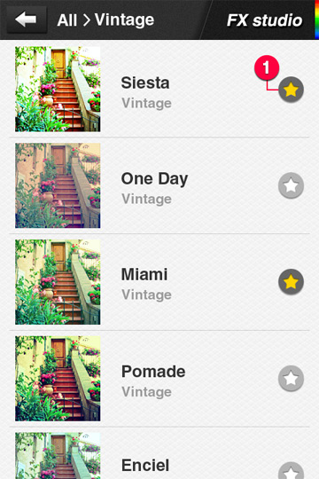
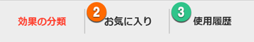
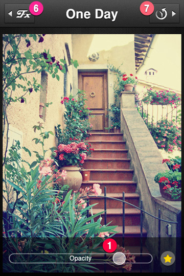
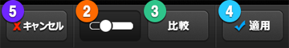
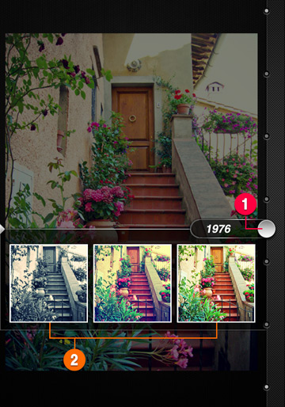

3. フィルタ効果(Preset)メニュー
(1)FX studio : 全200種類のFX効果の中から選び、様々な効果を手軽く適用することができます。

200種類のFX効果は全10種のテーマにて分類されています。適用してみたいテーマを選ぶと効果リストが確認できます。


(効果リスト画面)
FX効果の隣の①★マークを押すと②お気に入り(Favorite)に登録されます。お気に入り(Favorite)は最大30個まで登録できます。
③使用履歴(History)リストには最近適用(Apply)した20個のFX効果が自動的に登録されます。
※ お気に入り(Favorite)と使用履歴(History)リストは最大数を超えた場合には新規で登録されたFX効果に自動更新されます。
リストの中から１つのFX効果を選ぶとFX適用画面から確認することができます。


(FX適用画面)
FX適用画面下段の①スライドバー(Control slider)を動かし、効果の強弱(Opacity)を調整することができます。
下段の②Barトグルボタンを押下するとスライドバーがフェードアウトされ全体写真が確認できます。
③原本比較(Compare)ボタンを押下すると効果適用の前の写真と比較することができます。
④適用(Apply)ボタンを押下すると現在の効果を写真に適用した後、メイン画面に戻ります。
⑤キャンセル(Cancel)ボタンを押下すると現在の効果をキャンセルし、メイン画面に戻ります。
※下段ボタンの機能は他の画面でも同じく動作します。
※写真を左・右にスワイプ(Swipe)すると前と次のフィルタ効果を確認することができます。
左側上段の⑥FXボタンを使うと、効果リスト画面に戻ります。
右側上段の⑦Time Matrixボタンを使うと、もっと面白く、多様なFX効果が使えます。詳細は以下の説明をご確認ください。
(2) タイムマトリックス(Time Matrix) : タイムマトリックスを使い、写真とともに時間の旅にお出かけしてみましょう。
タイムマトリックス(Time Matrix) : タイムマトリックスを使い、写真とともに時間の旅にお出かけしてみましょう。

タイムマトリックス(Time Matrix)は過去のある時点の雰囲気に合った効果をお薦めしてくれる機能です。
右の①タイムスライドバー(Time Slider)を動かし、過去のある時点（年度）に移動すると、Time Matrix自動にその時代の雰囲気にあった②3つのFX効果を見せてくれます。
薦められた３つの効果は毎回同じ効果ではございません。
３つの効果の中からお気に入りの効果を選ぶとFX適用画面に移動します。FX適用画面で効果の調整及び適用を行ったり、
タイムマトリックス(Time Matrix)ボタンを押下し、タイムマトリックス(Time Matrix)に戻ったりすることができます。